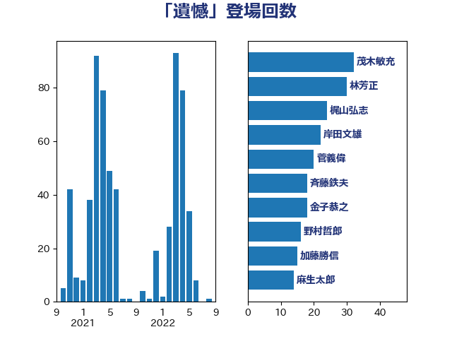

単語「遺憾」

| 茂木敏充 | 自由民主党 | 32 回 |
| 林芳正 | 自由民主党 | 30 回 |
| 梶山弘志 | 自由民主党 | 24 回 |
| 岸田文雄 | 自由民主党 | 22 回 |
| 菅義偉 | 自由民主党 | 20 回 |
| 斉藤鉄夫 | 公明党 | 18 回 |
| 金子恭之 | 自由民主党 | 18 回 |
| 野村哲郎 | 自由民主党 | 16 回 |
| 加藤勝信 | 自由民主党 | 15 回 |
| 麻生太郎 | 自由民主党 | 14 回 |
| 福山哲郎 | 立憲民主党 | 11 回 |
| 鈴木俊一 | 自由民主党 | 11 回 |
| 萩生田光一 | 自由民主党 | 10 回 |
| 音喜多駿 | 日本維新の会 | 9 回 |
| 岸信夫 | 自由民主党 | 8 回 |
| 後藤茂之 | 自由民主党 | 8 回 |
| 末松信介 | 自由民主党 | 8 回 |
| 柴田巧 | 日本維新の会 | 7 回 |
| 赤羽一嘉 | 公明党 | 7 回 |
| 小西洋之 | 立憲民主党 | 6 回 |
| 武田良太 | 自由民主党 | 6 回 |
| 芳賀道也 | 国民民主党 | 6 回 |
| 足立康史 | 日本維新の会 | 6 回 |
| 馬淵澄夫 | 立憲民主党 | 6 回 |
| 松野博一 | 自由民主党 | 5 回 |
| 鈴木敦 | 国民民主党 | 5 回 |
| 井上哲士 | 日本共産党 | 4 回 |
| 大串博志 | 立憲民主党 | 4 回 |
| 岡田克也 | 立憲民主党 | 4 回 |
| 松原仁 | 立憲民主党 | 4 回 |
| 田村憲久 | 自由民主党 | 4 回 |
| 吉川沙織 | 立憲民主党 | 3 回 |
| 大西健介 | 立憲民主党 | 3 回 |
| 末松義規 | 立憲民主党 | 3 回 |
| 枝野幸男 | 立憲民主党 | 3 回 |
| 田村智子 | 日本共産党 | 3 回 |
| 道下大樹 | 立憲民主党 | 3 回 |
| 青木愛 | 立憲民主党 | 3 回 |
| 上川陽子 | 自由民主党 | 2 回 |
| 上田清司 | 国民民主党 | 2 回 |
| 中山展宏 | 自由民主党 | 2 回 |
| 伊藤孝恵 | 国民民主党 | 2 回 |
| 伊藤岳 | 日本共産党 | 2 回 |
| 宮本岳志 | 日本共産党 | 2 回 |
| 小沼巧 | 立憲民主党 | 2 回 |
| 小泉進次郎 | 自由民主党 | 2 回 |
| 岩屋毅 | 自由民主党 | 2 回 |
| 川田龍平 | 立憲民主党 | 2 回 |
| 打越さく良 | 立憲民主党 | 2 回 |
| 新藤義孝 | 自由民主党 | 2 回 |
| 朝日健太郎 | 自由民主党 | 2 回 |
| 松本洋平 | 自由民主党 | 2 回 |
| 浅田均 | 日本維新の会 | 2 回 |
| 清水貴之 | 日本維新の会 | 2 回 |
| 渡辺周 | 立憲民主党 | 2 回 |
| 渡辺猛之 | 自由民主党 | 2 回 |
| 玉木雄一郎 | 国民民主党 | 2 回 |
| 矢倉克夫 | 公明党 | 2 回 |
| 稲津久 | 公明党 | 2 回 |
| 笠井亮 | 日本共産党 | 2 回 |
| 藤田文武 | 日本維新の会 | 2 回 |
| 進藤金日子 | 自由民主党 | 2 回 |
| 長峯誠 | 自由民主党 | 2 回 |
| 階猛 | 立憲民主党 | 2 回 |
| 青柳仁士 | 日本維新の会 | 2 回 |
| こやり隆史 | 自由民主党 | 1 回 |
| 三浦靖 | 自由民主党 | 1 回 |
| 三谷英弘 | 自由民主党 | 1 回 |
| 世耕弘成 | 自由民主党 | 1 回 |
| 中島克仁 | 立憲民主党 | 1 回 |
| 中川宏昌 | 公明党 | 1 回 |
| 井上信治 | 自由民主党 | 1 回 |
| 伊藤渉 | 公明党 | 1 回 |
| 佐藤英道 | 公明党 | 1 回 |
| 倉林明子 | 日本共産党 | 1 回 |
| 加田裕之 | 自由民主党 | 1 回 |
| 加藤鮎子 | 自由民主党 | 1 回 |
| 古川元久 | 国民民主党 | 1 回 |
| 古賀友一郎 | 自由民主党 | 1 回 |
| 吉田はるみ | 立憲民主党 | 1 回 |
| 吉田忠智 | 立憲民主党 | 1 回 |
| 吉田統彦 | 立憲民主党 | 1 回 |
| 坂井学 | 自由民主党 | 1 回 |
| 坂本哲志 | 自由民主党 | 1 回 |
| 城井崇 | 立憲民主党 | 1 回 |
| 大家敏志 | 自由民主党 | 1 回 |
| 太栄志 | 立憲民主党 | 1 回 |
| 安達澄 | 無所属 | 1 回 |
| 小林鷹之 | 自由民主党 | 1 回 |
| 小沢雅仁 | 立憲民主党 | 1 回 |
| 小田原潔 | 自由民主党 | 1 回 |
| 小里泰弘 | 自由民主党 | 1 回 |
| 山下雄平 | 自由民主党 | 1 回 |
| 山崎正昭 | 自由民主党 | 1 回 |
| 山崎誠 | 立憲民主党 | 1 回 |
| 岡本あき子 | 立憲民主党 | 1 回 |
| 岸真紀子 | 立憲民主党 | 1 回 |
| 市村浩一郎 | 日本維新の会 | 1 回 |
| 後藤祐一 | 立憲民主党 | 1 回 |
| 斎藤嘉隆 | 立憲民主党 | 1 回 |
| 本庄知史 | 立憲民主党 | 1 回 |
| 杉久武 | 公明党 | 1 回 |
| 松山政司 | 自由民主党 | 1 回 |
| 柳ヶ瀬裕文 | 日本維新の会 | 1 回 |
| 根本幸典 | 自由民主党 | 1 回 |
| 森本真治 | 立憲民主党 | 1 回 |
| 武井俊輔 | 自由民主党 | 1 回 |
| 池田佳隆 | 自由民主党 | 1 回 |
| 泉田裕彦 | 自由民主党 | 1 回 |
| 浅野哲 | 国民民主党 | 1 回 |
| 浜口誠 | 国民民主党 | 1 回 |
| 浦野靖人 | 日本維新の会 | 1 回 |
| 浮島智子 | 公明党 | 1 回 |
| 滝波宏文 | 自由民主党 | 1 回 |
| 熊田裕通 | 自由民主党 | 1 回 |
| 牧島かれん | 自由民主党 | 1 回 |
| 田村まみ | 国民民主党 | 1 回 |
| 盛山正仁 | 自由民主党 | 1 回 |
| 石井啓一 | 公明党 | 1 回 |
| 石井章 | 日本維新の会 | 1 回 |
| 石井苗子 | 日本維新の会 | 1 回 |
| 石川博崇 | 公明党 | 1 回 |
| 石田昌宏 | 自由民主党 | 1 回 |
| 礒崎哲史 | 国民民主党 | 1 回 |
| 神谷裕 | 立憲民主党 | 1 回 |
| 稲富修二 | 立憲民主党 | 1 回 |
| 美延映夫 | 日本維新の会 | 1 回 |
| 舞立昇治 | 自由民主党 | 1 回 |
| 若松謙維 | 公明党 | 1 回 |
| 西村康稔 | 自由民主党 | 1 回 |
| 西野太亮 | 自由民主党 | 1 回 |
| 西銘恒三郎 | 自由民主党 | 1 回 |
| 谷公一 | 自由民主党 | 1 回 |
| 野上浩太郎 | 自由民主党 | 1 回 |
| 鈴木宗男 | 日本維新の会 | 1 回 |
| 鈴木憲和 | 自由民主党 | 1 回 |
| 鈴木淳司 | 自由民主党 | 1 回 |
| 鈴木貴子 | 自由民主党 | 1 回 |
| 鈴木隼人 | 自由民主党 | 1 回 |
| 長坂康正 | 自由民主党 | 1 回 |
| 長浜博行 | 無所属 | 1 回 |
| 関口昌一 | 自由民主党 | 1 回 |
| 阿達雅志 | 自由民主党 | 1 回 |
| 青山繁晴 | 自由民主党 | 1 回 |
| 青柳陽一郎 | 立憲民主党 | 1 回 |
| 高橋千鶴子 | 日本共産党 | 1 回 |